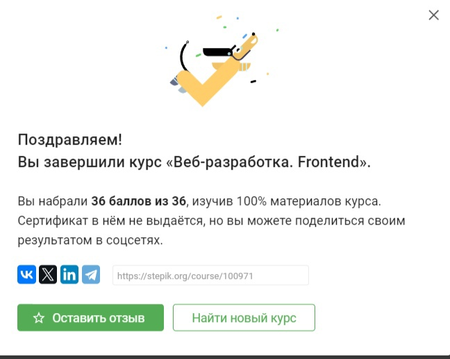

Сайт принадлежит: Уколову Кириллу Федоровичу
Электронный почтовый адрес: ukolov.kirito@mail.ru
Моя группа: 3102
Моя будущая профессия: Скорее всего программист
Мои увлечения или хобби: Спорт, настолки
Любая другая информация: не умею делать сальто


f
Ссылка на вуз Задание 2.2
Задание 2.3
Задание 3
Аккаунт степика
Мой ВУЗ - НВГУ
— высшее
учебное заведение, расположенное в Нижневартовске.
Ссылка на вуз Задание 2.2
Задание 2.3
Задание 3
Аккаунт степика